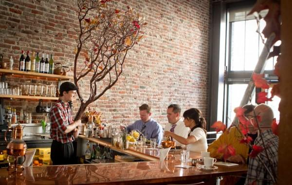

My favorite places to eat in SF:
- Kin Khao - Great Thai.
- Sanraku - Great Japanese and sushi.
- Benu - For that special occasion.
Places to eat in Castro
- Mama JiJi's - Great Dimsum.
- Slurp - Good noodles.
- Starbelly - Good brunch.
Places to eat in Richmond
- Hong Kong Cafe - Great Dimsum.
- Brothers- Great Korean BBQ.
- Yummy Yummy- Good Pho.
Best places overall
| Name |
Location |
| 1. NOPA |
Pacific Heights |
| 2. State Bird |
Downtown |
| 3. Sons and Daughters |
Downtown |

Here is a link to recent honorable mentions.
This is the website that I am comparing mine to.